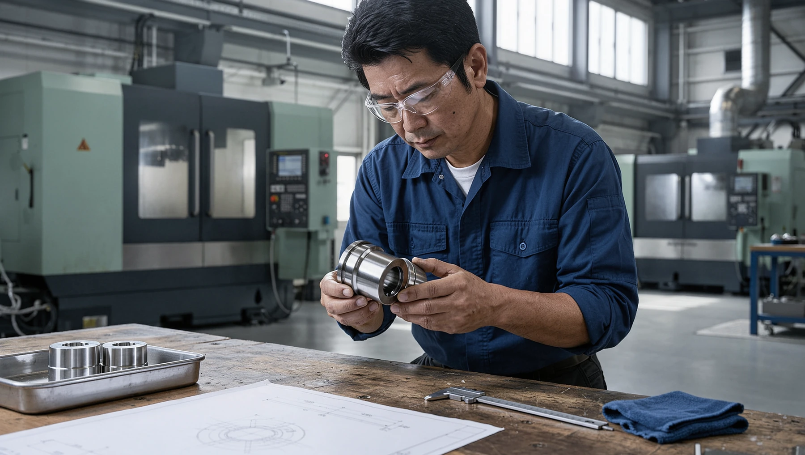

作業経験
業種名だけでなく、本人が担当した工程と作業。
製造現場の採用担当者様へ
「製造業の経験がある」だけでは、現場との相性は分かりません。どの工程で何を担当してきたか、日本語でどのように受け答えするか。候補者の情報を知り、自社の仕事を面接で伝えてから検討できます。
登録・人材情報・動画の確認・オンライン面接まで無料。
条件に合う候補者がいる場合にご案内します。


画像はAI生成のイメージです。実在の候補者・導入企業ではありません。
動画で確認日本語の受け答えを知る
面接まで無料見て、話してから判断
LINEで相談まず希望条件を伝える
採用前に、確かめたいこと
業種名だけでなく、本人が担当した工程と作業。
分からない指示を確認する場面や、報告の方法。
勤務時間帯や交代勤務の有無、通勤の条件。
SELECTくんで、検討の一歩を
材料の準備、加工、組立、検査など、何を担当するかで必要な経験は変わります。候補者の人材情報を確認するときは、自社の工程と共通する部分、入社後に教える部分を分けてみてください。動画では受け答えを確認し、面接で作業説明への理解を確かめます。対象業務や在留資格の条件、候補者の状況は個別に確認します。
こんなときの採用相談に
相談から検討まで
担当予定の作業と、使用する設備・工具を整理します。
職種・勤務地・人数とともに、必要な経験をお知らせください。
該当者との面接で、現場の進め方と勤務条件を確認します。
情報・動画・オンライン面接を通じて、企業様ご自身で採用をご判断いただけます。
料金について
採用の検討を始める段階で、
候補者を知るための費用はかかりません。
1人あたり・税別内定後、詳しい人材情報をご提供する際に発生する料金です。
VISA申請・登録支援などの費用は、上記20万円に含まれません。必要な手続きや費用は採用条件に応じて個別にご確認ください。
ご相談の前に
希望する機械や作業経験を条件としてお伝えください。該当する候補者がいる場合にご案内するため、必ず見つかるというお約束はできません。
作業経験があっても、自社の設備や安全手順への教育は別途検討が必要です。技術や適性を保証せず、面接などで個別に確認してください。
実際の作業内容と在留資格などの条件を確認する必要があります。工場の業種だけでなく、任せる工程を具体的にお知らせください。
外国人採用をご検討の企業様へ
職種・仕事内容、勤務地、必要人数・希望時期をお知らせください。条件に合う候補者がいる場合、人材情報と動画をご案内します。
登録・人材情報・動画の確認・オンライン面接まで無料。
条件に合う候補者がいる場合にご案内します。
友だち追加後、採用の希望条件をご回答ください。
LINE登録だけでお申し込みにはなりません。
人材のご案内や採用・入社時期を保証するものではありません。